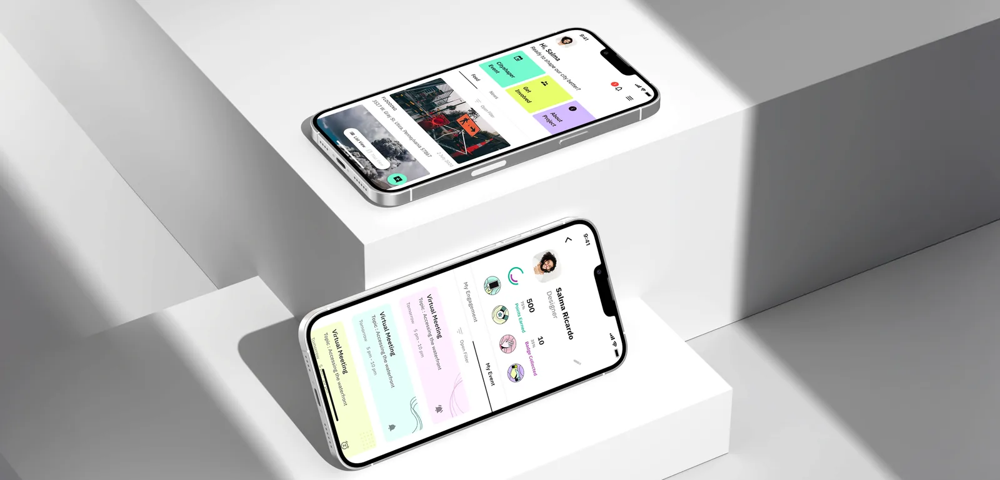
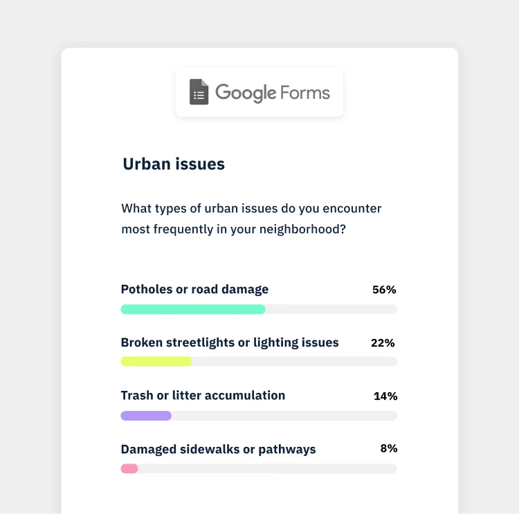
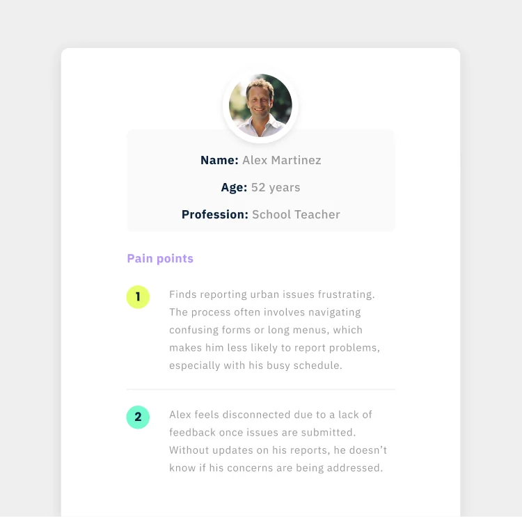
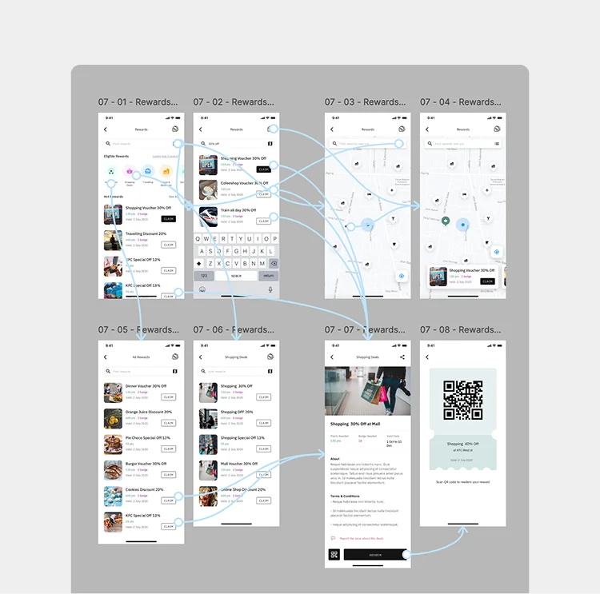

Reporting
- Steps reduced
- Clear report categories
- Faster report input
- Reduced user friction
- Structured form layout
- Guided user flow
- Fewer input errors
+42%
Completion Rate
Designing a civic platform people actually want to use.

"Most civic apps don't fail because of technology. They fail because people stop caring."
When I started working on Irys, the problem wasn't just reporting urban issues — it was that users didn't believe anything would happen after they did.
The problem wasn't reporting — it was everything around it.
From the outside, everything seemed in place: users could report issues, governments could receive them, and data was being collected. But the experience told a different story. Reporting was slow and frustrating, with a 27% drop-off during the process, no visibility after submission, and a 38% drop in user return. What looked complete on the surface was failing to keep users engaged or coming back.
Every decision was grounded in research, validated through iteration, and connected to business impact.

ResearchConducted user interviews and behavioral analysis to uncover friction beyond the surface. Observed real interactions to identify gaps between expected and actual experience. Journey mapping and feedback revealed that lack of visibility after reporting was the main driver of low trust.

SynthesisSynthesized insights into clear problem statements using affinity mapping and pattern recognition. Identified recurring themes and structured them into key opportunity areas. Reframed the challenge from improving reporting flows to building trust and encouraging users to return.
Started building the design system in parallel with research to ensure consistency from the start. Defined components, layouts, and interaction patterns across product surfaces. This foundation enabled faster iteration and supported both the app and dashboard experience.

Prototype & TestBuilt interactive prototypes in Figma to validate key flows early in the process. Tested solutions iteratively with users to refine usability and reduce friction. Each iteration improved clarity and made the experience more intuitive and aligned with expectations.
I redesigned the experience around three principles: making reporting easier, increasing visibility after submission, and giving users a reason to return.
Completion increased by 28%, turning a fragmented flow into a clear and successful experience. At the same time, 7-day returning users grew by 42%, showing that users now had a reason to come back, follow progress, and stay engaged.
What used to end at submission became the beginning of an ongoing interaction. Instead of reporting and leaving, users could follow what happened next, track progress, and understand the impact of their actions. Over time, points, badges, and visible contributions made the experience more engaging — something users wanted to return to, improve, and stay involved with.
I'm open to selected collaborations and projects. Let's talk about what you're building, and how it can work better.
Get in Touch →